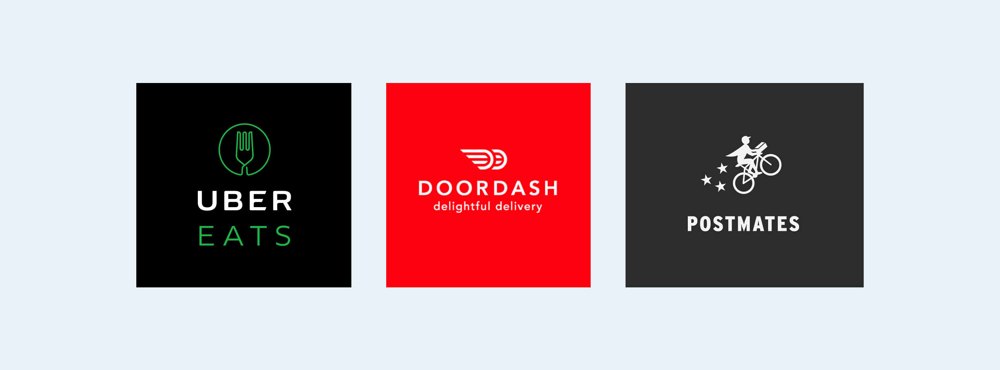
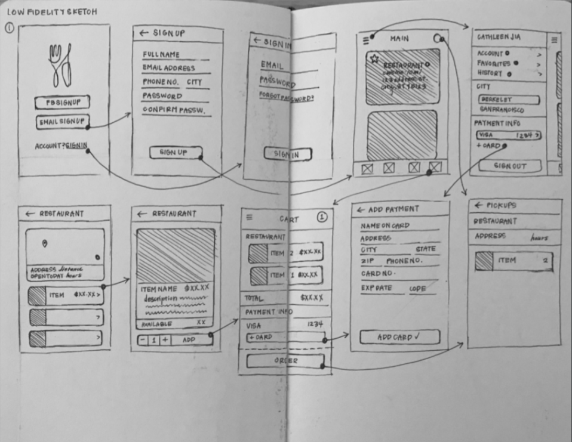
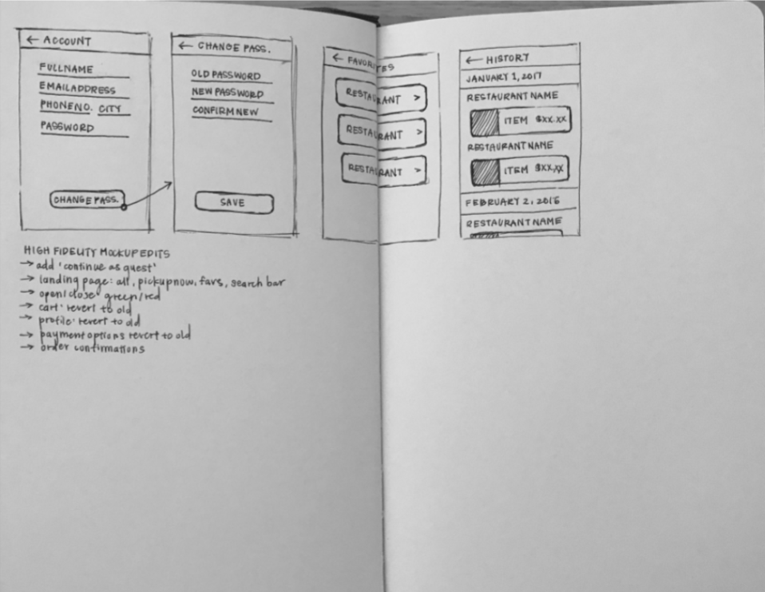
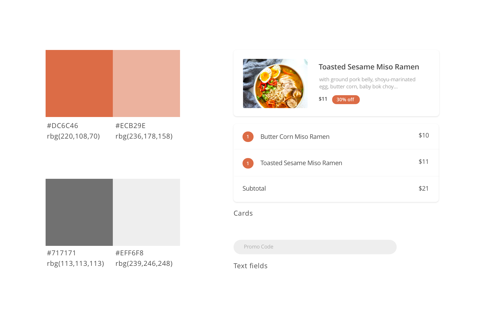

- Introduction
- Mission
- Team + Objective
- Research
- Inital Sketches
- Final Solution
- Demo
- Style Guide
- Next Steps
- Reflection
- Updates
Cathleen Jia
View All >
Index
Halfy Hour Mobile App UI / UX
I redesigned UI + UX flows for Halfy Hour, a Berkeley based startup - working on a smartphone application that offers locally sourced food at discounted rates.

-
Local restaurants offer deals at their own choosing, dependent on how many servings they have available or want to make available
-
Users order food through the app, and go to the restaurant to pick up food
Mission
Halfy Hour partners with restaurants to advertise their brand to thousands of people nearby. Restaurants see increased traffic while providing great deals to customers.
Team + Objective
I worked directly under the founder and CEO to redesign and simplify the UX flows and UI. I also partnered with remote developers to oversee the project from conception to final release. I hosted weekly Skype calls to check in with progress on implementation.
Research
Talking to College Students
I conducted a user experience workshop with a group of 15 UC Berkeley students. I walked them through the old version of the app and received feedback on the UX flows, what they liked and didn’t like about the app.
Key Points of Improvement

- Unintuitive flows for adding an item to the cart. When quantity of items is incremented from 0 to 1, the item is automatically sent to the cart; yet, the user is still prompted to “Add to Cart.” “Add to Cart” option still available even if 0 items have been selected.
- Inconsistent styling. Buttons vary in style — some are not clearly indicated to be buttons. Text alignment varies as well. Without a cohesive style and layout, the app does not look professional, and users tend not to trust it. Trust is vital when asking for credit credit card information.
- Restaurants should be listed with those open and favorited first. Action of scrolling through causes loss of interest and engagement.
- Text fields are unintuitive to the user. Pivot towards material design.
- Hot pink theme received consensus vote that it’s a rather distasteful choice. Does not agree with the goal of winning over the user’s trust. Rebrand with color choices and logo. Execs would like to continue with fuchsia tones.
- User should be prompted to login before using the app. Do not interrupt experience with prompt later. Execs would like to keep continue as guest option.
Competitive Analysis
I researched other companies with similar missions. My main take aways were:
- These apps have slightly different flows since they are food delivery services, while Halfy Hour is just a discount service and users have to go to the restaurant to pick up their own food.
- If you order food from more than one restaurant, you have to pay separately for them.

Initial Sketches
I did two cycles of sketches. I began with sketches of a simplified flow.



Final Solution
Here I have a high fidelity mockup for flow of signing up and ordering food through pick up.

Notes
I thought it was important to display what items the user still needs to pick up. The difference between this app and other food apps is that users need to physically go to the restaurant to retreive their order. Thus, it's important to have an indicator that makes this difference explicit on the app itself.
Video Demo
Style Guide

Next Steps
Moving forward, I would like to design a dashboard for different locations when Halfy Hour expands to San Fransisco. As of right now, it only encompasses restaurants based out of Berkeley simply due to the capacity of the startup. However, an easy to use toggle between cities is crucial for future growth.
Reflection
It was a pleasure working with Viktor and his team. This being my first major design project, I’m pleased with the lessons and skills I’ve learned through this.
Updates
Halfy Hour was acquired by Kiwi in Fall 2017. I assisted in the transfer of design assets, and Kiwi in currently in another round of fundraising.